LipSyncOne ヘルプ
画像やVRMモデルと音声から、口パク・目パチ・動きの付いた透明動画を作る操作を紹介します。
Windows 11 x64 ／ 0.4.7の使い方 ／ 2026年10月22日更新
START
まずはサンプルで動画を作る
画像と音声を用意すれば、口パクを自動で付けられます。まずは、準備の少ない「全身画像2枚」で試してみましょう。
0.4.4では、画像とVRMの奥行きを同じ画面で調整し、その配置で動画を書き出せます。以前の作品を開く場合は、保存形式の案内もご確認ください。
1. サンプル3をダウンロードする
ZIPを展開します。imagesフォルダーに閉口・開口のPNG、audioフォルダーにWAVが入っています。自分の画像で試す場合も、同じ位置・大きさで口だけが違う2枚を用意してください。
2. 新しいプロジェクトを作る
HOMEの「新規プロジェクト」を選びます。

3. 2枚の画像でキャラクターを追加する
「キャラクターを追加」を開き、「全身画像2枚で口パク」を選びます。「画像を追加」から2枚を読み込み、閉じた口と開いた口をそれぞれ指定して「2枚でキャラクターを追加」を押します。
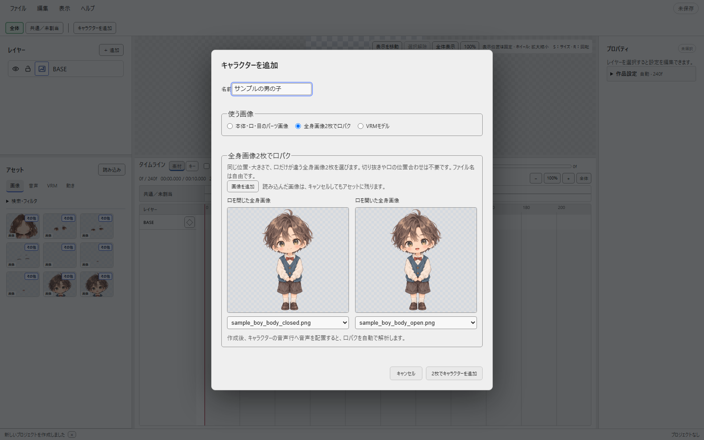
4. 音声をドラッグする
アセットの「読み込み」からWAVを追加します。「音声」タブにある素材を、追加したキャラクターの音声行へドラッグしてください。配置すると口パクの解析が始まります。
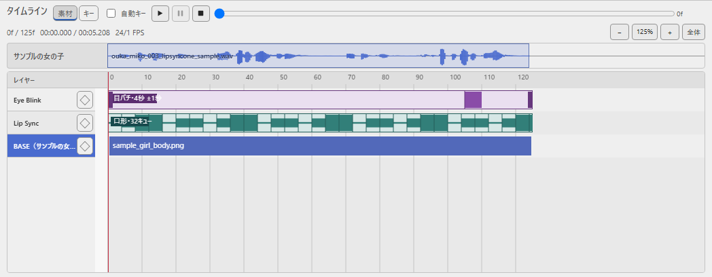
5. 透明動画にする
「ファイル → 動画を書き出す」を開きます。初めてなら「軽量WebM」と「透明（アルファ）」を選び、保存先を指定して書き出してください。詳しくは動画の書き出しをご覧ください。
サンプル3の音声は「VOICEVOX:猫使アル」です。音声を使った作品を公開するときはクレジットを表記し、ZIP内のREADMEにある利用条件をご確認ください。目パチの画像は含まれていません。
3つの無料サンプルから選べます


画像や音声を使った作品を公開するときは、それぞれのZIP内にあるREADMEで利用条件とクレジットをご確認ください。
01
画面の見方
左で素材を選び、中央で再生し、右で調整します。何かを変更したいときは、先に対象の画像・レイヤー・音声を選んでください。

- レイヤー
- 素材の重なり順、表示、位置のロックを管理します。
- アセット
- 読み込んだ画像・音声・VRM・動きを置いておく場所です。使う素材をここからドラッグします。
- プレビュー
- 完成時の見た目を確認します。画像やモデルを直接選び、配置やポーズを調整できます。
- タイムライン
- 素材を使う時間を決めます。上が音声、下が画像や動きの行です。
右のプロパティは、3つのタブに分かれています
- 配置
- 位置・大きさ・回転、表示する時間を調整します。
- 動き
- 口パク・目パチ、VRMのポーズ・モーション・呼吸などを設定します。
- 見た目
- 不透明度、VRMの光源・材質・表情などを調整します。
- 作品設定
- パネル下部から、作品全体のタイムラインの長さなどを設定します。
見出しを押すと設定を開閉できます。タブと開閉状態はこのPCに記憶します。パネルの境界をドラッグすると広さを変えられ、「表示 → パネル配置を初期化」で戻せます。
02
素材を読み込む
アセットの「読み込み」から、画像や音声を追加します。画像はPNG・JPEG、音声はWAV・MP3に対応します。透明な背景には、透明度を持つPNGを使ってください。

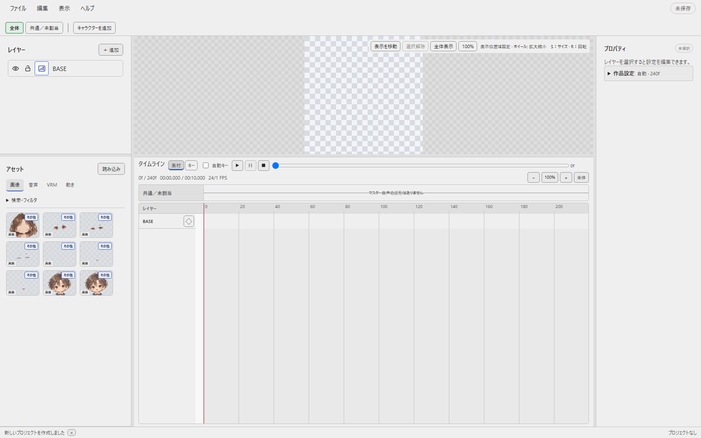
素材が多いときは「検索・フィルタ」を開き、名前や使用状況で絞り込みます。閉じると素材を広く表示できます。
パーツ画像をファイル名でまとめて設定する
本体・口・目の画像に共通の名前を付けると、キャラクターの追加画面でひとつのグループとして選べます。たとえばsample_girl_body.pngとsample_girl_mouth_closed.pngです。
下の「コピー」でファイル名をコピーできます。{名前}を同じキャラクターで共通の名前に置き換えてください。全身画像2枚で作る場合は、ファイル名は自由です。
| 割り当て | 対応ファイル名 | 必要な組 |
|---|---|---|
| BASE | {名前}_body.png | 1枚 |
| 口形・かんたん2枚 | {名前}_mouth_closed.png{名前}_mouth_open.png | 2枚すべて |
| 口形・かんたん3枚 | {名前}_mouth_closed.png{名前}_mouth_medium.png{名前}_mouth_wide.png | 3枚すべて |
| 口形・詳細9枚 |
{名前}_mouth_A.png
{名前}_mouth_B.png
{名前}_mouth_C.png
{名前}_mouth_D.png
{名前}_mouth_E.png
{名前}_mouth_F.png
{名前}_mouth_G.png
{名前}_mouth_H.png
{名前}_mouth_X.png
| 9枚すべて |
| 目・2枚 | {名前}_eye_open.png{名前}_eye_closed.png | 2枚すべて |
| 目・3枚 | {名前}_eye_open.png{名前}_eye_half.png{名前}_eye_closed.png | 3枚すべて |
区切りには「_」をおすすめします。大文字・小文字は区別しません。追加画面では、使う組にチェックを付けます。画像が不足している組や同じ役割が重複した組は選べません。
外部のソフトで素材を編集したら
元ファイルを保存すると、自動で読み直します。今すぐ更新したいときは「ファイル → アセットを再読み込み」を選んでください。音声の内容が変わると、波形と口パクも更新します。
保存途中で一時的に読み込めない場合は、直前の表示を保って待ちます。ファイルを移動・削除した場合は元の場所へ戻すか、アセットのプロパティで差し替えてください。
03
キャラクターを追加する
全身画像2枚で作る
閉じた口と開いた口の全身画像を使います。「キャラクターを追加 → 全身画像2枚で口パク」で2枚を指定してください。同じ位置・大きさで口だけが違う画像にすると、切り替え時に体が動きません。
本体・口・目のパーツ画像で作る
口パクに加えて目パチも付けたいときは、パーツ画像を使います。サンプル1・2には、本体・口・目のPNG 7枚と音声が入っています。
- 画像をまとめて読み込むZIPを展開し、imagesフォルダーのPNGをアセットへ読み込みます。追加画面の「画像を追加」からでも読み込めます。
- 素材のグループを選ぶ「キャラクターを追加」で「本体・口・目のパーツ画像」を選び、「素材のグループ」からsample_girlなどの名前を選びます。
- 確認して追加する名前と、本体・口・目の組を確認して「キャラクターを追加」を押します。

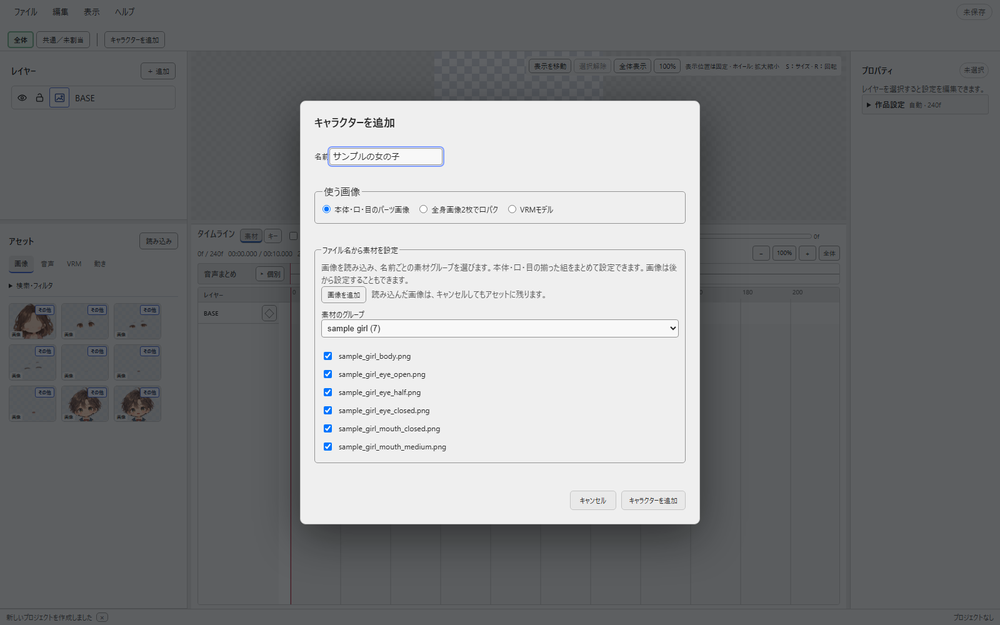
追加したキャラクターの音声行へWAVを置くと、口パクを解析します。ファイル名を揃えずに口や目を設定したいときは、追加後に口形設定や目パチ設定から画像を選べます。
2人以上を使うとき
話者ごとにキャラクターを追加し、それぞれの音声行へ音声を置きます。異なる行の音声は同時に再生できます。同じ行の同じ時間には、2つ以上のクリップを配置できません。
「全体」タブでは全員の配置を確認できます。「共通／未割当」は背景や小物などに使います。タブを切り替えても、ほかのキャラクターの表示や音は消えません。
音声の所属を変えるには、配置を削除して目的の音声行へ置き直します。アセットにある元の音声は残ります。
録音した音声を使う
「編集 → 録音…」から録音できます。音声ファイルを素材として保存し、使うキャラクターの音声行へ配置してください。
3D
VRMモデルを使う
0.4.0から利用できます。
VRMモデルにも、音声に合わせた口パクと自動の目パチを付けられます。画像のキャラクターや背景と、同じ作品に置くこともできます。
- モデルを追加する「キャラクターを追加」で「VRMモデル」を選びます。「VRMを追加」で.vrmファイルを読み込み、「モデルを選択」で選んで「キャラクターを追加」を押します。追加後にプレビューへ表示します。VRM 0.x / 1.0に対応します。
- 音声を配置するそのキャラクターの音声行へ音声を置きます。口パクの解析が始まります。
- 動きを確認する再生ボタンで確認します。口パク・目パチ・呼吸などは「動き」タブから調整できます。
ポーズを変える
モデルを選び、「動き → 3Dの配置・基本ポーズ」でポーズプリセットを選んで「ポーズを適用」を押します。プレビューの「向き・ポーズ（3D）」では、関節の輪を選んで直接調整できます。

「手足を移動（IK）」では、手首・足首の移動に肘・膝が追従します。「関節を回転（FK）」では、選んだ関節を回せます。ドラッグを離すと確定し、Escで取り消します。
VRMAモーションを並べる
.vrmaファイルを読み込み、アセットの「動き」からタイムラインのVRMレイヤーへドラッグします。帯を移動すると開始時刻、端を動かすと長さを変えられます。

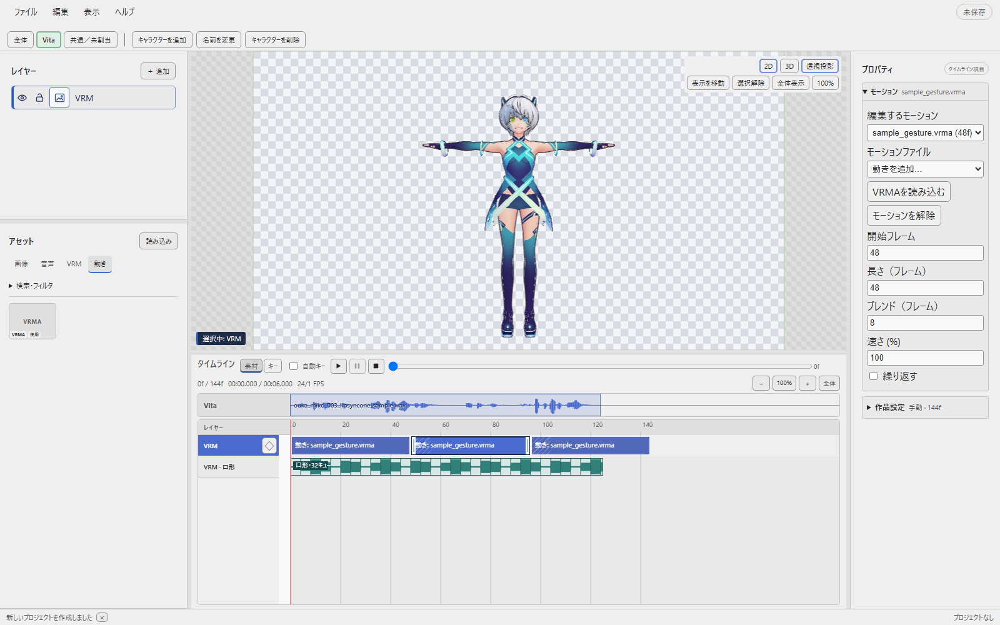
同じ行の同じ時間には、画像・モーションを重ねて置けません。2つのモーションを隙間なく並べると、次の動きへ滑らかにつながります。帯を選び、「動き → モーション」の「ブレンド（フレーム）」でつなぐ長さを変えられます。初期値は6フレーム、0ならすぐに切り替わります。
同じプロパティで、速さや「繰り返す」を変更できます。Deleteや「モーションを解除」で選んだ配置だけを外せます。音声は別に配置してください。
FBX・GLBの動きやポーズを使う
「アセット → 動き → 読み込み」からFBXまたはGLBを選びます。モデル自体ではなく、人型の動きだけを取り込みます。0.4.6から使えます。

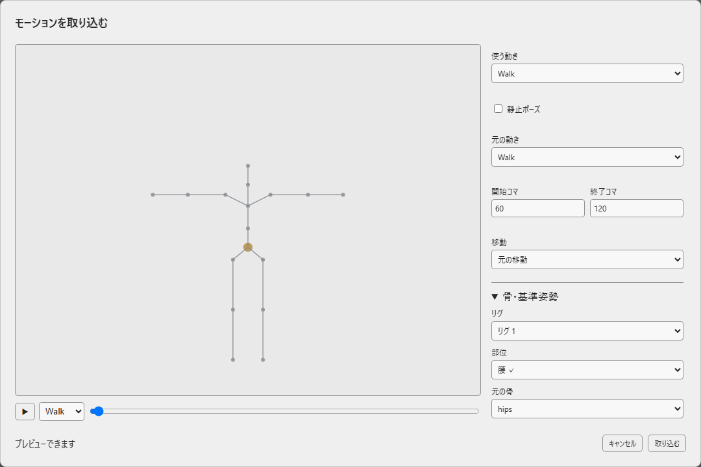
- 複数の動きがある場合は「使う動き」を選びます。静止ポーズにしたいときは「静止ポーズ」をオンにし、使うコマを指定します。
- 移動させず使いたい場合は「移動 → その場で再生」を選びます。上下の動きは残ります。
- 向きや腕の角度が違う場合は「骨・基準姿勢」を開きます。部位と元の骨を対応付け、必要なら基準角度・上方向・正面方向を調整します。
- 取り込んだ素材をアセットからVRMレイヤーへドラッグします。VRMの「動き → モーション」から取り込む場合は、そのVRMへ同時に配置します。
後から素材を選び「変換設定」で調整できます。その素材の全配置へ反映します。別設定を使いたいときは「別設定として複製」を選んでください。元ファイルの外部編集は自動で反映し、「ファイル → アセットを再読み込み」でも更新できます。保存途中は最後の表示を保ちます。
元のFBX・GLBと作品ファイルを一緒に保管してください。動画には書き出し開始時の素材と設定を使います。骨が対応しない場合は設定を確認し、モデル・材質・ライト・任意の表情・IKの変換は対象外です。VRMAファイルへの書き出しは今後の対応です。
音声なしでも呼吸・目パチを付ける
「動き → 呼吸・待機」で「呼吸・待機アニメーション」をオンにします。「強さ (%)」で動きの大きさ、「速さ (%)」でテンポを調整できます。目パチも音声なしで動作します。「髪・服を揺らす」では、モデルに設定された揺れ物を動かします。
遠近感や光を変える
新しいモデルは透視投影で表示します。プレビュー操作パネルの「平行投影 / 透視投影」、またはテンキー5で切り替えられます。視点は作品のカメラに固定されており、中ボタンでは回転しません。
「見た目 → 光源」で光の方向を選び、「光の強さ」で明るさを変えます。標準・スタジオ・やわらかい光・サイドライト・リムライト・フラットから選べます。投影や光源の設定は保存され、動画にも反映されます。
0.4.4：画像とモデルの前後関係を変える
レイヤーを選び、「配置 → 奥行き Z」を変えます。大きい値ほど手前、小さい値ほど奥へ移動します。プレビューのZハンドル、またはGのあとにZを押しても調整できます。Escで取り消します。
同じ奥行きならレイヤー順で重なります。画像とモデルには共通の投影を使います。透視投影では、手前へ動かすと大きく、奥へ動かすと小さく見えます。動かした状態をアニメーションにしたいときはキーへ記録してください。
画像を薄くする・フェードさせる
画像レイヤーを選び、「見た目 → 不透明度 (%)」を変えます。100%は元の表示、50%は半分の濃さ、0%は見えない状態です。キャラクター全体も薄くしている場合は、その濃さと掛け合わせます。
フェードさせたいときは、別のコマで値を変えて「キーを追加」または「キーを更新」を押します。未記録の変更は動画に入らないため、先にキーへ記録してください。「口の差し替え」「目の差し替え」の不透明度もその行で変更できます。
VRMモデル全体を半透明にする設定はありません。髪・まつ毛などモデル本来の透明部分と、透明背景の動画出力は使えます。以前の作品にあるVRM全体の不透明度やキーは、表示の濃さに影響しません。

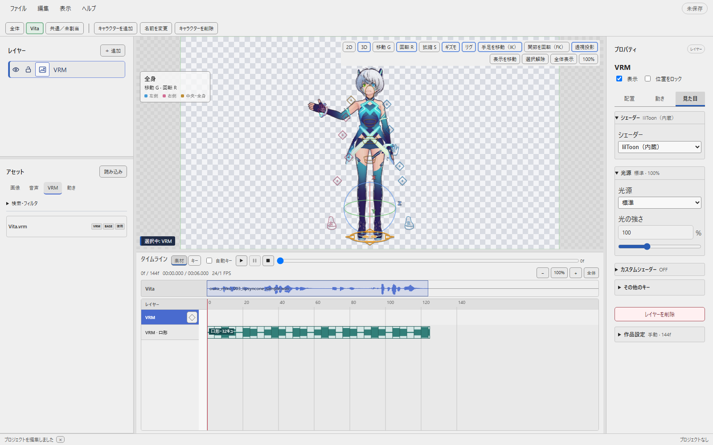
キーボードでポーズを調整する
プレビュー上でGは移動、Rは回転、Sは拡大縮小です。X・Y・Zで軸を限定します。同じ軸をもう一度押すとローカル軸、さらに押すと視点軸へ戻ります。Rをもう一度押すとトラックボール回転です。Enterまたはクリックで確定、Escまたは右クリックで取り消します。
自動キーがオフで、すでにキーがある項目を変えた場合は未記録プレビューになります。保存や書き出しの前にキーへ記録してください。詳しくはキーフレームと自動キーをご覧ください。
回転は最終的な向きを記録します。動画で一周以上回したいときは、途中の向きにもキーを入れてください。
外部でモデルやモーションを編集したとき
元の.vrmや.vrmaを保存すると変更を読み直します。「ファイル → アセットを再読み込み」で、すぐに更新することもできます。保存途中で読めない間は直前の表示や動きを保ち、再試行します。
カスタムシェーダーを使う
「見た目 → カスタムシェーダー」から、Three.js向けのフラグメントGLSL（.frag / .glsl）と、必要なら頂点GLSL（.vert / .glsl）を読み込めます。頂点を省略すると、標準の口パク・ポーズ処理を使います。
外部で編集したGLSLは自動で読み直します。保存途中やコンパイル失敗では直前の表示を保ちます。「標準表示に戻す」で元の材質に戻せます。動画は書き出し開始時のGLSLを使い、読めない場合は元の材質を使います。
GLSLの最小例
UTF-8で保存してください。GLSL 1、または先頭に#version 300 esを持つGLSL 3に対応します。fragmentはlinearのstraight RGBAを出力します。色空間変換とalpha処理はアプリ側が担当します。標準頂点はvUv・vNormal・vViewPositionを渡します。uniformはmap・hasMap・diffuse・opacity・alphaTest・time（秒）・resolution（px）を使えます。独自の照明計算を使う場合、光源プリセットへの反応もGLSL側で記述します。
uniform sampler2D map;
uniform bool hasMap;
uniform vec3 diffuse;
uniform float opacity;
varying vec2 vUv;
void main() {
vec4 color = vec4(diffuse, opacity);
if (hasMap) color *= texture2D(map, vUv);
gl_FragColor = color;
}モデルの利用条件と現在の制限
モデルの利用条件・クレジット指定を確認してください。アプリにモデルの使用許可は付属しません。モデル・画像・音声の編集と描画はPC内で行い、外部サービスへアップロードしません。
VRMはレイヤーごとに描画して画像と重ねます。異なるモデル間で3D空間の前後関係や影は共有しません。手足は骨の長さを伸ばさず、届く範囲で動きます。足の接地を固定する全身IKや、歩行モーションの自動生成はありません。
04
口形画像を設定する
キャラクターのタブを選び、「＋追加 → 口・リップシンク」を開きます。設定済みの口レイヤーなら、「動き → 口形設定」から画像を変更できます。

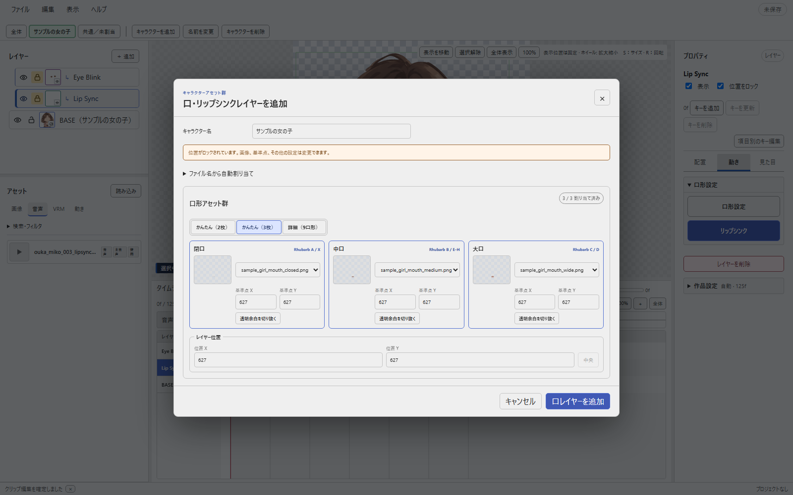
| 設定 | 必要な画像 | 動き方 |
|---|---|---|
| かんたん（2枚） | 閉口、開口 | 閉じる・開くを切り替える |
| かんたん（3枚） | 閉口、中口、大口 | 開き具合を3段階にする |
| 詳細（9口形） | A、B、C、D、E、F、G、H、X | 発音に応じた形を個別に指定する |
口だけを切り出した小さな画像も使えます。本体の位置に合わせて、口レイヤーの位置や画像の基準点を調整してください。全身画像2枚をそのまま切り替える方法は、最初の手順をご覧ください。
詳細9口形：A、B、C、D、E、F、G、H、Xの意味
口形記号は開き具合の順番ではなく、発音ごとの形を表します。
| 口形 | 形の目安 | 主な音 |
|---|---|---|
| A | 力を入れて唇を閉じる | P / B / M |
| B | 歯を閉じ、口を少し開く | K / S / T、EE |
| C | 口を開く | EH / AE |
| D | 口を大きく開く | AA |
| E | 口を少し丸める | AO / ER |
| F | 唇をすぼめる | UW / OW / W |
| G | 上の歯を下唇へ当てる | F / V |
| H | 舌を上の歯の後ろへ上げる | L |
| X | 力を抜いて口を閉じる | 無音・発話の間 |
かんたん2枚ではA・Xを閉口、B・C・D・E・F・G・Hを開口へまとめます。かんたん3枚では、閉口・中口・大口へ自動で振り分けます。
05
音声に合わせて口パクを付ける
口形を設定したキャラクターの音声行へ音声を置くと、自動解析が始まります。終わったらタイムラインを再生し、声と口の動きを確認してください。
解析する言語を選ぶ
タイムラインの音声を選び、プロパティの「解析する言語」で「日本語・その他」または「英語」を選びます。初期値は「日本語・その他」です。選択は保存され、再解析でも引き継がれます。
変更した言語は次の解析から使います。配置済みの口パクを更新するときは、「リップシンク」から解析し直してください。
口が開きすぎる・静かな区間でも開くとき
対象の口レイヤーや音声を選び、「リップシンク」の解析画面を開きます。「音量の影響度」や「無音しきい値」を少し上げて、解析し直してみてください。

解析中は進捗を確認でき、キャンセルできます。失敗しても配置した音声は残るので、設定を見直して再試行してください。
音声はPC内で解析します。Rhubarbと必要なデータは同梱されており、解析用の追加ダウンロードや外部への音声送信はありません。
06
目パチを付ける
開いた目と閉じた目の2枚を用意します。半閉じの画像も使うと、まばたきの途中を表現できます。キャラクター追加でまとめて設定するか、「＋追加 → 目・目パチ」から画像を選びます。
目パチには音声は必要ありません。初期状態ではタイムライン全体で動き、音声が短いキャラクターも最後までまばたきします。
- 間隔を変える
- 「動き → 目パチ」で平均間隔とランダム幅を調整します。
- 閉じる長さを変える
- 閉眼時間をフレーム数で指定します。
- タイミングを変える
- 「パターンを変更」で、間隔を保ちながら発生する位置を変えます。
- 動く区間を変える
- タイムラインの目パチの帯の両端をドラッグします。
間隔や閉眼時間の数値を変えたら、「目パチ設定を適用」を押してください。
表示区間を数値で指定する
目レイヤーの「配置 → レイヤー」で「タイムライン全体に合わせる」を外し、開始位置と表示時間をフレーム数で入力します。再びオンにすると、全体へ追従します。位置ロック中でも目パチや表示区間は変更できます。
07
配置と表示する時間を調整する
素材を使う時間を変える
タイムラインの帯をドラッグすると開始位置、左右の端をドラッグすると長さを変えられます。同じ行の同じ時間へは、2つ以上の素材を置けません。別の行や空いている時間へ配置してください。
音声は1行のまとめ表示から始まります。配置や削除をするときは「個別」を押して音声行を開き、「まとめる」で戻せます。まとめ表示でも波形をドラッグして再生位置を動かせます。表示の切り替えで音声の配置や再生内容は変わりません。
位置・大きさ・回転を変える
画像やレイヤーを選び、「配置 → 画面上の配置」を開きます。数値を変えると、少し待ってプレビューへ反映します。Enterですぐ確定、Escで未確定の入力を戻せます。

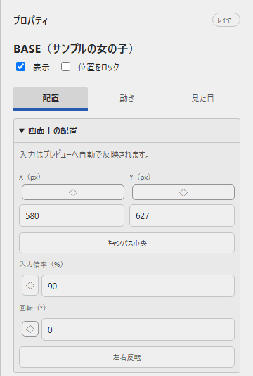
| したいこと | 操作 |
|---|---|
| 画像を移動する | プレビューの画像を選んでドラッグします。 |
| 画像を拡大・縮小する | 画像を選び、プレビュー上でSを押してマウスを動かします。 |
| 画像を回転する | 画像を選び、プレビュー上でRを押してマウスを動かします。 |
| 変形を確定・取り消す | クリックかEnterで確定。右クリックかEscで取り消します。 |
| 左右反転する | プロパティの「左右反転」を押します。 |
| 表示・非表示を切り替える | レイヤーの目アイコンを押します。 |
| 重なり順を変える | レイヤー一覧の行を上下へドラッグします。 |
BASEはキャラクター本体です。口と目はBASEの位置に追従します。口・目の位置を動かすときは、鍵アイコンで位置ロックを解除してください。背景は通常のレイヤーに置き、キャラクターより下へ移動します。
タイムラインの長さを変える
初期設定は「自動」です。最後の画像・音声・モーションなどの終わりに合わせて、タイムラインが伸び縮みします。末尾に余白を作りたいときは、プロパティ下部の「作品設定 → タイムラインの長さ」で「手動」を選びます。24 FPSなら240フレームで10秒です。
配置済みの素材より短い長さは指定できません。「自動」に戻すと、素材の終端へ揃います。
プレビューの表示だけを拡大・移動する
ホイールで表示を拡大・縮小します。「全体表示」でカンバス全体が収まります。表示位置だけを動かしたいときは「表示を移動」をオンにして左ドラッグし、再クリックかEscで素材操作へ戻ります。これらの操作で、素材の位置や動画の解像度は変わりません。
カンバスサイズを変える
「編集 → カンバスサイズ」で、現在のコマを縮小表示しながら辺・角のハンドルや数値で調整できます。角をShiftと一緒にドラッグすると縦横比を保ちます。「適用」で確定し、Ctrl+Zで戻せます。画像自体の大きさは変わらず、中心を基準に余白や切り取り範囲が変わります。
行が多いときはスクロールする
レイヤー一覧は見出しを残して上下へスクロールします。タイムラインでは、レイヤー名欄の右端のスクロールバーか、名前の上でホイールを使います。時間列ではShift＋ホイールで上下、通常のホイールで左右へ移動します。
KEY
キーフレームと自動キー
0.4.0から利用できます。
キーフレームは、「このコマでは、この位置やポーズにする」という記録です。0コマ目と24コマ目に違う位置を記録すると、その間をつないで動かせます。
- コマを選ぶ動かすレイヤーを選び、タイムラインを「キー」に切り替えます。記録したいコマへ再生位置を動かします。
- 値を変えるプロパティかプレビューで、位置・大きさ・回転・不透明度を調整します。
- キーを追加する「キーを追加」を押すと、そのコマの配置をまとめて記録します。記録済みのコマは「キーを更新」で上書き、「キーを削除」でまとめて削除できます。

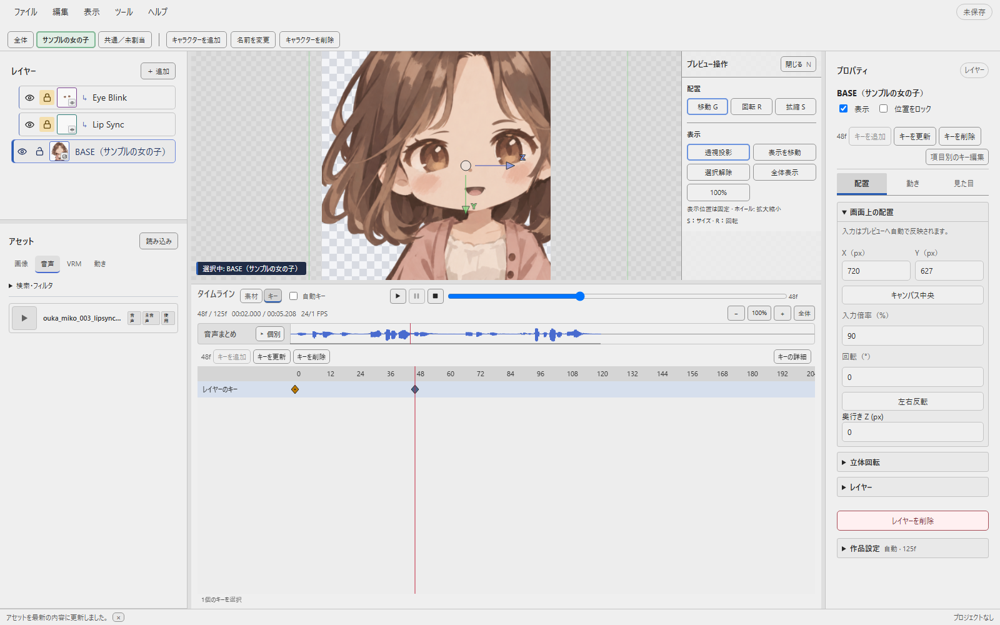
自動キーで、調整と同時に記録する
タイムラインの「自動キー」をオンにすると、配置の変更を現在のコマへまとめて記録します。初期状態はオフです。同じコマにあるキーを変更すると、そのキーを更新します。VRMの関節・表情などは変更した項目を記録します。
未記録プレビューのままにしない
キーがある項目を、自動キーがオフのまま変更すると、まず未記録の状態で見た目を試せます。「未記録」が出たら、Iキーや記録ボタンでキーにしてください。別のコマへ移動するか、Escで取り消すと変更は消えます。
未記録の変更は保存・動画出力に含まれません。試した位置やポーズを残すときは、先にキーへ記録してください。
項目ごとに細かく編集する・ショートカット
プロパティの「項目別のキー編集」を開くと、位置・倍率・回転・不透明度の個別キーや、VRMの基本ポーズ・表情・カメラなどを編集できます。位置は「配置」、ポーズは「動き」、表情や不透明度は「見た目」で調整します。
キーのタイムラインではIで配置をまとめて記録、Alt＋Iで現在の配置キーを削除できます。「キー」表示中の数値入力はEnterでも記録できます。詳細編集では項目ごとの操作になります。削除や記録は、元に戻す・やり直すに対応します。
CURVE
動きの速さとキーの間隔を整える
0.4.0から利用できます。
動き出しや止まり方を変える
キーのタイムラインで「キーの詳細」を開き、項目を選んで「グラフ」を押します。補間を「ベジェ」にすると、ハンドルを動かして、ゆっくり動き出す・ゆっくり止まるといった変化を作れます。

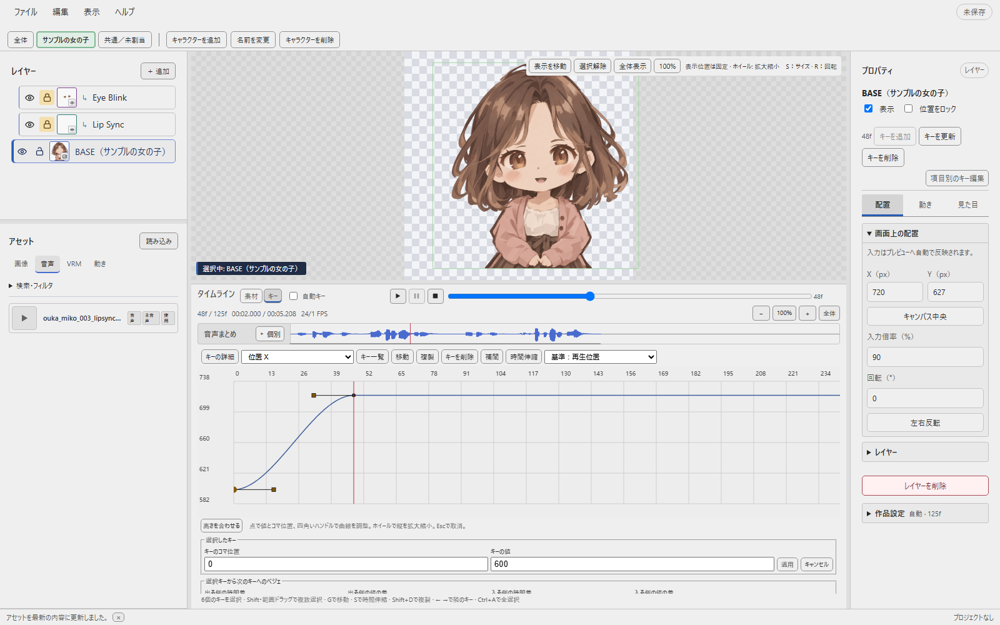
| 補間 | 動き方 |
|---|---|
| 一定 | 次のキーまで同じ値を保ち、切り替えます。 |
| 直線 | 一定の速さで変わります。 |
| ベジェ | ハンドルで動き出しや止まり方を調整します。 |
動きを全体的に長く・短くする
キーを複数選んでSを押すと、キーの間隔を伸縮できます。支点は再生位置・選択の先頭・末尾から選びます。Enterで確定、Escで取り消します。時刻は整数フレームへ揃います。
調整できる値と、キーが重なる場合
ベジェのハンドルは単一の数値を編集できます。ベクトルはX・Y・Z、3D回転は基準からの角度を表示します。ベクトルや回転の値自体はプロパティやポーズ操作で調整してください。
同じ項目の選択キーが同じコマへ潰れる場合は確定できません。既存キーと重なる場合は、置き換える内容を確認してから確定します。確定後も元に戻せます。プレビュー上のSは素材の拡大縮小なので、キー編集のペインにフォーカスして操作してください。
08
保存する・素材ごと持ち運ぶ
作業を保存する
「ファイル → 保存」またはCtrl＋Sで、.ls1ファイルに保存します。通常の保存では、画像・音声・VRM・VRMAそのものは含みません。元の素材ファイルも保管してください。
.ls1をダブルクリックすると、続きから編集できます。未保存の作品を開いている場合は、保存・破棄・キャンセルを選んでから切り替えます。
別のPCへ移す・まとめて保管する
「ファイル → プロジェクトを収集して保存」を使うと、.ls1とアセットに登録した素材をひとつのフォルダーにまとめられます。そのフォルダー全体を移動してください。素材をほかの人に渡すときは、各素材の再配布条件をご確認ください。
素材を相対パスでまとめるフォルダー構成
.ls1と同じフォルダー、またはその下にある素材は、保存時に自動で相対パスになります。外にある素材は絶対パスです。保存方法を選ぶ必要はなく、素材自体も移動しません。
作品フォルダー/ ├─ 作品.ls1 └─ 素材/ ├─ 本体.png ├─ 口_閉じ.png └─ 音声.wav
この構成なら「素材/本体.png」のように記録します。中の配置を変えずに「作品フォルダー」全体を移動すれば、移動後も素材を参照できます。
.ls1だけを別のサブフォルダーへ入れ、素材をその外に置くと絶対パスになります。相対パスでまとめたい場合は、素材をすべて.ls1と同じフォルダーか、その下へ入れてください。
読み込み済みの素材を後から移動した場合は、アセットのプロパティで移動先へ差し替え、保存し直します。「名前を付けて保存」では、同じ素材を参照するようにパスを調整します。
旧版のプロジェクトと復旧について
0.4.4は、奥行きと共通カメラを含むv4形式で保存します。0.3系のv2、0.4.0〜0.4.3のv3ファイルは開くときに移行しますが、保存するまでは元ファイルを変えません。基本的な配置やキーを引き継ぎますが、旧版と見た目が完全に一致するとは限りません。v4で保存すると0.4.3以前では開けないため、元の作品を残す場合は「名前を付けて保存」で別名にしてください。v1など、それ以前の形式は対象外です。
作業中は復旧用データを自動保存します。正常に終了できなかったときは、次回起動時に復旧を案内します。通常の保存やバックアップも併せて行ってください。
09
透明な動画を書き出す
「ファイル → 動画を書き出す」またはCtrl＋Eで開きます。初期設定は「軽量WebM」、背景は「透明（アルファ）」です。

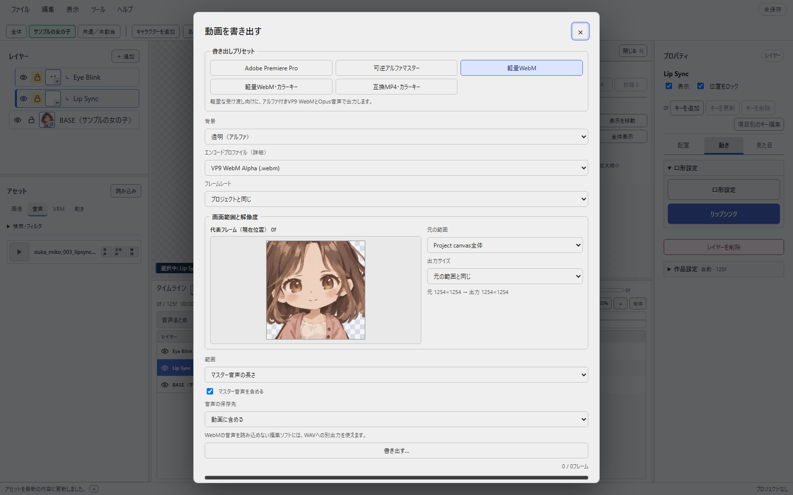
| 目的 | 選ぶ形式 | 特徴 |
|---|---|---|
| 軽い透明動画を作る | 軽量WebM | 透明度を保ちながら容量を抑えます。 |
| Premiere Proへ渡す | ProRes 4444 Alpha / MOV | 動画編集に使うアルファ付き素材です。 |
| 劣化を抑えて保管する | 可逆アルファマスター / FFV1 / MKV | 透明度を含むマスター素材です。 |
| 一般的なプレイヤーで確認する | 互換MP4・カラーキー / H.264 | 背景色付きの確認用です。透明度は保持しません。 |
画像とVRMの混在作品も同じ手順で書き出せます。プレビューの表示倍率は作業用です。動画の解像度は、この画面の出力サイズで指定します。
0.4.4では、画像とモデルの奥行き・共通投影もプレビューと同じ配置で書き出します。操作ハンドルや選択枠は動画に入りません。「未記録プレビュー」がある場合は、先にキーへ記録してください。
書き出しには開始時の素材を使います。処理中に元の画像やモデルを編集した場合は、完了後にもう一度書き出すと反映されます。処理は進捗から取り消せます。素材を保存中で読み込めない場合は、保存が終わってから再実行してください。
透明動画は、Windows標準のプレイヤーでは再生できないことがあります。仕上げ先の編集ソフトへ読み込み、背景の上に重ねて確認してください。形式ごとの対応状況は編集ソフトによって異なります。
INSTALL
インストールする
Windows 11 x64向けのアプリです。公式配布ページからセットアップEXEをダウンロードします。BOOTHのZIPを使う場合は、展開してから中のセットアップEXEを実行してください。
- セットアップを実行する画面の案内に従ってインストールします。
- スタートメニューから開くLipSyncOneを選びます。初めて使うときはサンプルで動画を作るへ進んでください。
公式サイト・BOOTH版には、Windowsの実行ファイル署名を付けていません。警告が出た場合は、公式配布元から入手したことを確認し、内容を読んで判断してください。
Windowsの警告が出る場合
公式サイト・BOOTHから入手したファイルであることを確認します。SmartScreenでは、まず「詳細情報」を開き、対象のアプリや表示内容を確認してください。入手元やファイルに心当たりがない場合は実行しないでください。

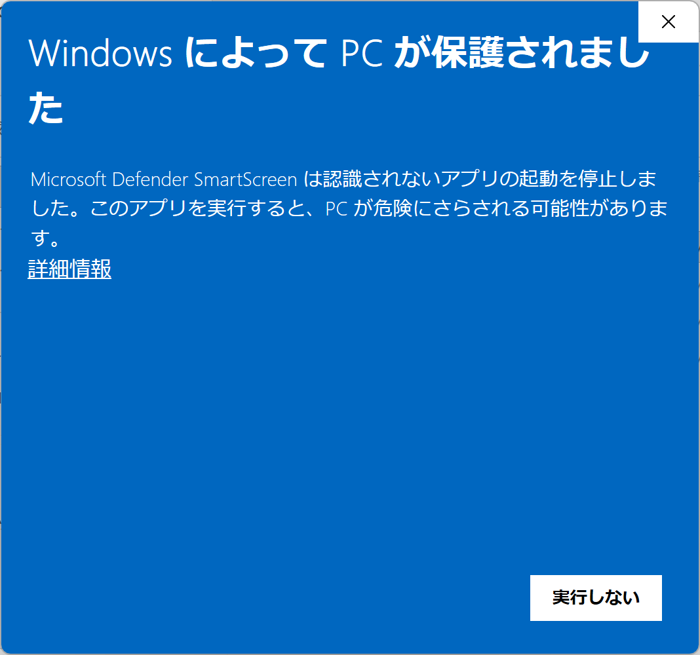

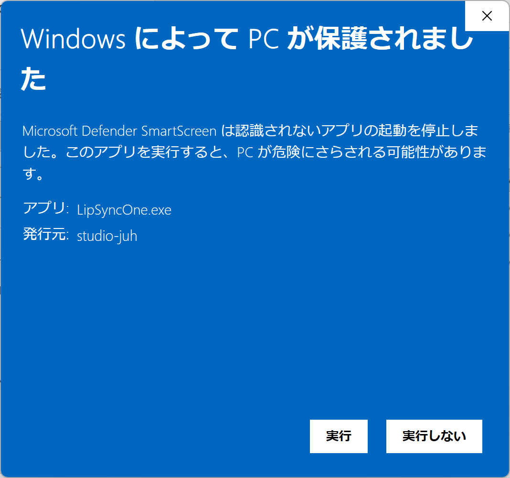
スマート アプリ コントロールの場合
SmartScreenとは別のWindowsの保護機能です。ブロックされた場合は、Windowsが表示する理由や設定の説明を確認してください。保護機能を変更する操作はPC全体に影響するため、警告を消すためだけに設定を変えることはおすすめしません。

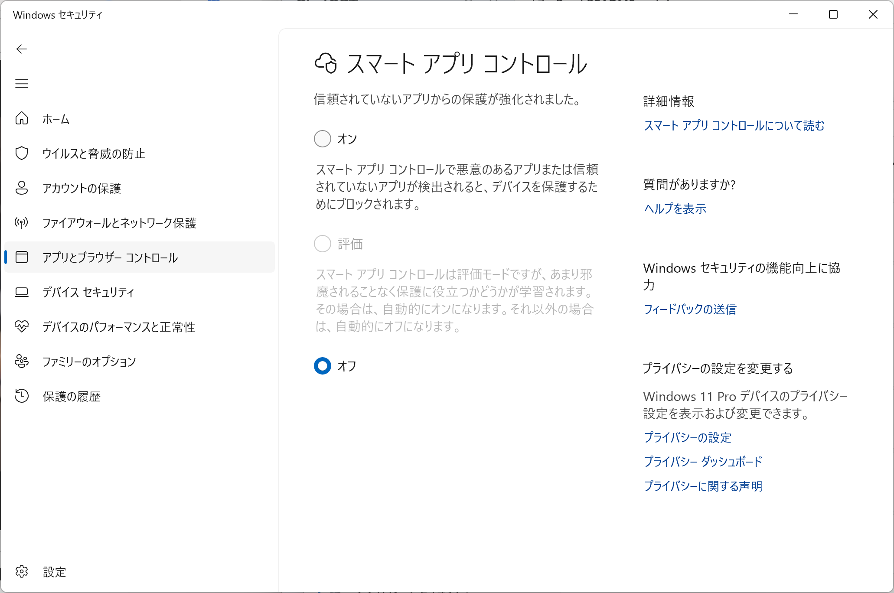
詳しくは、Microsoft公式：スマート アプリ コントロールに関するよく寄せられる質問をご確認ください。リンク先の閲覧にはインターネット接続が必要です。
以前の配布形式について
現在はNSISインストーラーに統一しています。以前のポータブル版から移る場合は旧アプリを終了し、現在のセットアップEXEを実行してください。Microsoft Store版は現在の通常配布には含めていません。
10
アプリを更新する
「ヘルプ → アップデートを確認…」から手動で確認します。起動時の自動確認は行いません。
- プロジェクトを保存する編集中の内容を保存します。
- 更新を確認する新しい版がある場合は、案内を読んで「更新して再起動」を選びます。
- 再起動を待つ更新ファイルの取得と適用が終わると、アプリを再起動します。取得中は取り消せます。
更新内容と公開状況はリリース一覧で確認できます。
BOOTHの購入者証明について
購入者証明ファイル（.lso-license）は「ヘルプ → 購入状態」から読み込みます。
11
よく使うショートカット
| Ctrl＋S | 保存 | Ctrl＋E | 動画の書き出し |
|---|---|---|---|
| Ctrl＋Z | 元に戻す | Ctrl＋Shift＋Z | やり直す |
| Space | 再生・一時停止 | S / R | 選択素材の拡大縮小 / 回転 |
| G | VRMの選択部位を移動 | テンキー5 | VRMの平行投影 / 透視投影を切替 |
| Enter / Esc | 変形を確定 / 取り消す | I / Alt＋I | キーを記録 / 削除 |
| Ctrl＋C / V | クリップをコピー / 貼り付け | Ctrl＋K | このヘルプ内を検索 |
変形操作は、対象を選んでプレビュー上へマウスを置いて使います。数値や文字の入力中は、素材の変形を始めません。VRMやキーの操作は0.4.0から利用できます。
HELP
困ったときは
音声や画像を読み込んでもタイムラインに出ない
読み込みはアセットへの登録です。画像は使いたいレイヤーへ、音声はキャラクターの音声行へドラッグしてください。素材を読み込む
音声が再生できない・波形が出ない
音声がタイムラインへ配置されているか確認します。「ファイル → アセットを再読み込み」も試してください。元ファイルを移動・改名した場合は元へ戻すか、アセットのプロパティで差し替えます。再生操作の横に案内がある場合は、その内容を確認して再試行してください。
口パクの解析が始まらない
キャラクターの音声行に音声があり、口形が設定されているか確認します。「共通／未割当」へ置いた音声は、キャラクターの行へ置き直してください。同梱エンジンが見つからないと表示される場合は、アプリを再インストールしてください。
静かな区間でも口が開く
解析画面で「無音しきい値」や「音量の影響度」を少し上げて再解析してください。口パクの調整へ
口や目が表示されない
レイヤーの目アイコン、画像の割り当て、位置を確認します。パーツ方式では、現在のコマにBASEがないと、追従する口や目も表示されません。全身画像2枚の方式では、別の本体画像は不要です。
画像やモーションを同じ場所に置けない
同じ行の同じ時間には、素材を重ねて配置できません。空いている時間へ移すか、別のレイヤーを使ってください。VRMの「口形」の行は解析結果の表示用です。モーションは上のVRMレイヤーへ置きます。
調整したポーズや位置が保存した動画に出ない
「未記録プレビュー」の表示がある場合は、Iキーや記録ボタンでキーへ記録してください。保存と書き出しには記録済みの内容を使います。キーを記録する手順へ
VRMのシークに時間がかかる
後半のコマへ移動するとき、髪・服の揺れを途中から計算し直す場合があります。必要なら取り消し、「髪・服を揺らす」をオフにして配置や口パクを調整できます。処理時間はモデルやPCによって異なります。
一部の区間だけ口や目を差し替えたい
「＋追加 → 口の差し替え」または「目の差し替え」で行を追加します。口形・目設定に登録した画像を、アセットから差し替え行へドラッグしてください。その区間だけ置き換わり、区間外では自動の動きへ戻ります。
自動アニメーションを解除したい
レイヤーを右クリックし、「通常の画像レイヤーに戻す」を選びます。ロック中でも解除でき、元の画像・素材・設定は残ります。元に戻す操作で復元できます。キーボードでは対象にフォーカスしてShift＋F10でも開けます。
音声の最後がフレームの線と合わない
音声の最後のサンプルまで使うため、帯の端がフレーム線の途中になることがあります。正常な表示です。
BGMやサブ音声を重ねられる？
異なるキャラクターの音声行は同時に再生できます。同じ行ではクリップを重ねられません。BGMの加工や音声エフェクトは、仕上げ先の編集ソフトで行ってください。
透明動画をWindows標準プレイヤーで再生できない
選んだ形式にプレイヤーが対応していない場合があります。編集ソフトへ直接読み込んで確認するか、背景色付きの確認用MP4を書き出してください。出力形式の選び方へ
別のPCで素材が見つからない
.ls1だけでは素材は移動しません。元のPCで「ファイル → プロジェクトを収集して保存」を使い、できたフォルダー全体を移動してください。保存と素材の持ち運びへ
Windowsの警告で起動できない
公式配布元から入手したことを確認し、インストール欄の画面例で警告の種類と内容を確認してください。
解決しない場合
アプリとWindowsのバージョン、再現手順、表示されたメッセージを添えると確認しやすくなります。公開できない素材や個人情報は送らないでください。技術情報を公開して報告する場合はGitHub Issuesも使えます。
該当する項目がありません。別の言葉で検索してください。